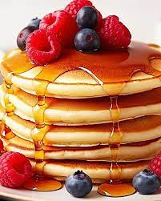

Pencake Reciped
Pancakes are a classic breakfast dish made from a batter consisting of flour, eggs, milk, and baking powder. Once the batter is mixed, it's poured onto a hot griddle or frying pan and cooked until golden brown on both sides. Pancakes are often enjoyed with toppings like syrup, butter, fruit, or chocolate chips.
Indegrents:
- Flour
- Eggs
- Milk (or buttermilk)
- Baking powder (or baking soda)
- Salt
- Sugar (optional)
- Butter or oil (for cooking)/li>
- Vanilla extract (optional, for flavoring)
Steps:
- Mix Dry Ingredients: In a large mixing bowl, whisk together 1 1/2 cups of all-purpose flour, 2 tablespoons of sugar (optional), 1 tablespoon of baking powder, and a pinch of salt.s
- Prepare Wet Ingredients: In another bowl, beat 2 large eggs lightly. Then add 1 1/4 cups of milk (or buttermilk) and 2 tablespoons of melted butter (or oil). You can also add 1 teaspoon of vanilla extract for extra flavor if desired.
- Combine Wet and Dry Ingredients: Pour the wet ingredients into the bowl with the dry ingredients. Use a spatula or whisk to gently mix everything together until just combined. Be careful not to overmix; a few lumps in the batter are okay.
- Preheat Cooking Surface: Heat a non-stick skillet or griddle over medium heat. Add a small amount of butter or oil to the skillet and spread it evenly to coat the surface.
- Cook Pancakes: Once the skillet is hot, pour about 1/4 cup of batter onto the skillet for each pancake. Cook until bubbles form on the surface of the pancake and the edges start to look set, about 2-3 minutes.
- Flip and Cook: Use a spatula to carefully flip the pancakes and cook for an additional 1-2 minutes on the other side, or until golden brown and cooked through.
- Serve: Transfer the cooked pancakes to a plate and repeat the process with the remaining batter. Serve the pancakes warm with your favorite toppings, such as maple syrup, butter, fresh fruit, or whipped cream.